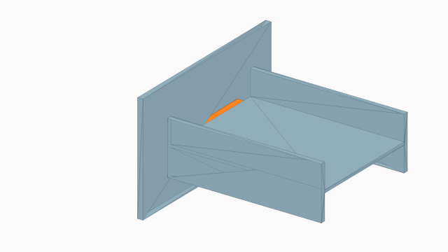
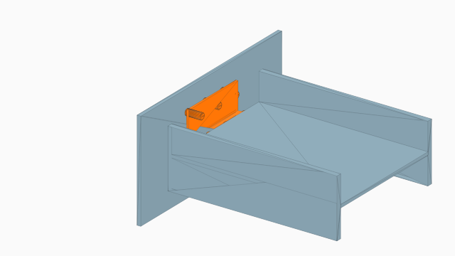
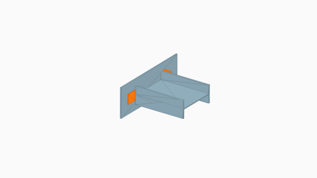
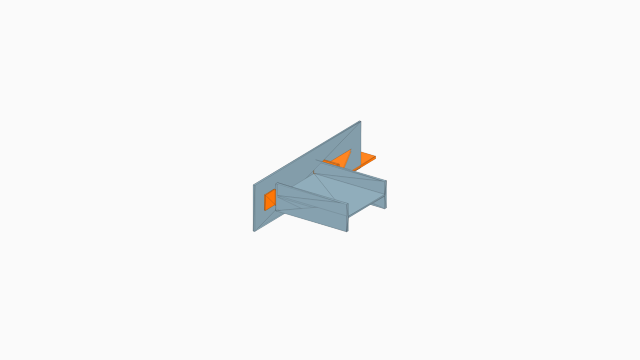

Las capturas 3D de placa base se usan en la galería. Las de corte quedan en revisión porque el modelo actual representa el apoyo como una placa delgada.
| Tipo | SVG | 3D |
|---|---|---|
| Placa base expuesta | | |
| Base empotrada Tipo I | | |
| Base débil | | |
| Placa simple | |  |
| Doble ángulo | |  |
| Asiento | |  |
| Asiento rigidizado | |  |